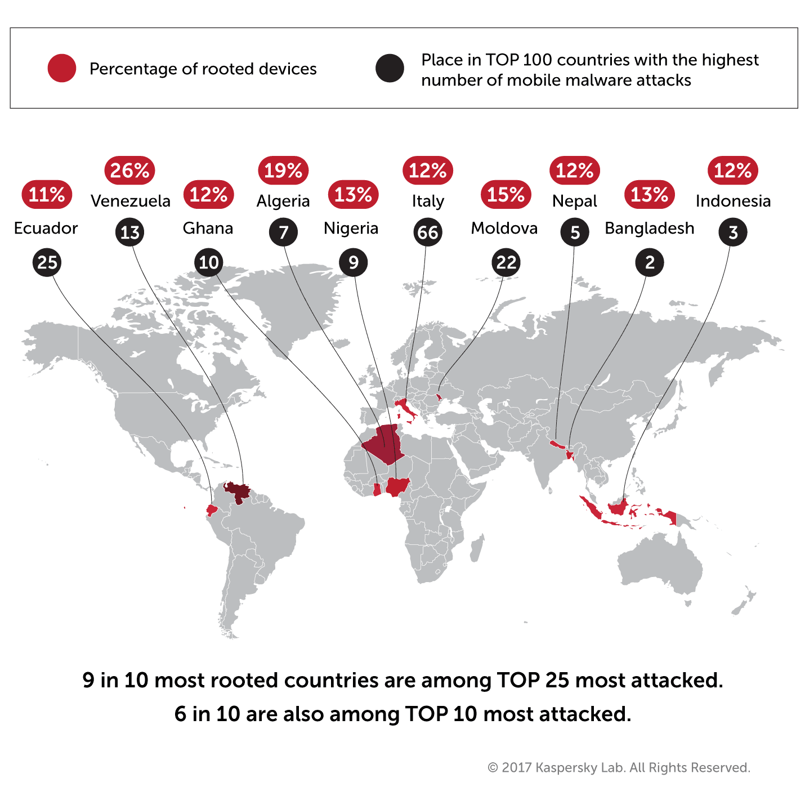

Birçok Android kullanıcısı cihazlarını root etmek istiyor. Bugün Android cihazları rootlamanın avantajlarını ve dezavantajlarını anlatırken cihazınızı rootlamanız gerekip gerekmediğini anlatacağız.
İnsanlar Android cihazlarını neden Rootluyor
Süper kullanıcı hakları elde etmek ki – popüler olarak rootlamak olarak bilinir -, kullanıcılara cihazlarında tam yetki sağlar. Sanal olarak bu süper kullanıcı hakları ile her şeyi yapmak mümkündür. Bazıları Google Play’de olmak üzere bazı uygulamalar da tam olarak çalışmak için bu “kök izinleri” talep eder.
Süper kullanıcı ayrıcalıkları genel olarak cihaz üzerindeki yetki kapasitesini arttırır. Örneğin, bazı uygulamaların network aktivitelerini limitlendirebilirsiniz, önceden yüklenmiş ve silemediğiniz rahatsız edici uygulamaları silebilirsiniz, CPU’yu hızlandırabilirsiniz ve dahasını yapabilirsiniz.
Kaspersky Security Network‘ü kullanarak kullanıcıların popüler Android cihaz rootlama sebeplerini derledik.
- Oyunları hackleyen uygulamalar yüklemek. Bu uygulamalar oyunun kayıtlı olduğu hafızaya erişip parametreleri değiştirerek ücretsiz oyun, ücretsiz hak vb şeyler sağlayabiliyor.
- Sistem dosyalarına erişim. Sistem dosyalarına sınırsız erişim, silinmiş dosyaları kurtarmak için sınırsız yetki kullanmak kullanışlı olabilir. Ayrıca uygulamaları SD karta taşıtabilirsiniz ve gelişmiş dosya sistemi işlevlerine sahip uygulamaları kullanabilirsiniz.
- Tweak, overclock ve cihaz temizleme. Overclock demek, CPU’yu hızlandırmaya denir, böylece cihaz daha hızlı çalışır.
- Android versiyonunu değiştirmek. Bazı kullanıcılar, meraklıları tarafından oluşturulan üçüncü parti yazılım ROM’larını (işletim sisteminin farklı sürümlerini) deneyebilirler.
Kullanıcılar kök ayrıcalıklarına nasıl erişiyor
Verilerimize göre, kullanıcılar Kingroot, 360 Root, Framaroot, Baidu Easy Root, Towelroot, One Click Root ve Mgyun gibi programlar kullanarak süper kullanıcı hakları elde ediyor. Maalesef, bu uygulamaların birçoğu ya reklam gösteriyor veya cihaza reklam virüsü yüklüyorlar. Bu davranışa zararlı diyemeyiz ancak haliyle yararlı da değildir.
Cihaz rootlamak için bu tarz uygulamaların hiçbirini önermiyoruz. Aslında, cihazları rootlamanızı başlı başına önermiyoruz. Sebebi için okumaya devam edin.
Rootlamanın tehlikeleri
Dediğimiz gibi, süper kullanıcı hakları cihaz üzerinde tam kontrol sağlar. Bu yetkinin avantajları olduğu gibi (yukarıda bahsettik), dezavantajları da mevcuttur.
Öncelikle şunu anlamakta fayda var, cihazı süper kullanıcı sistem izinleriyle kullanmak Android’in temel güvenlik prensiplerine aykırı. Rootlamak, elinizdeki cihazı kendi kendinize hacklemek demektir.
Normalde, Android uygulamaları izole ortamlarda çalışır (Bu ortama Sandbox denir) ve sistemdeki diğer uygulamalara erişim yeteneği yoktur. Ancak süper kullanıcı hakları olan ve izole bir ortamda bulunmaya uygulama cihazın tüm kontrolünü ele alabilir.
Süper kullanıcı izinleri ile uygulamalar istediklerini yapabilirler. Örneğin içeriğe bakabilirler, düzenleyebilirler, sistemin çalışması için lazım olan dosyaları dahi silebilirler.
Ayrıca, rootlanan cihazın garanti kapsamı dışında kaldığını da unutmayın. Bazen rootlama işlemi sırasında yapılan hatalar yüzünden cihazınız takozdan farksız hale gelebilir. Böyle durumlarda yapılabilecek hiçbir şey yok. Telefonunuzu gerçekten takoz olarak kullanabilirsiniz.
Zararlı uygulamalar ve rootlanmış Androidler
Süper kullanıcı haklarını elde ettikten sonra, zararlı yazılımlar elde ettikleri yetkilerin tadını çıkartır. Aslında, birçok zararlı Android Trojanı öncelikle kök dizine erişmeye çalışır. Rootlanmış cihazlara giren zararlı yazılımlar için bu cihazlar velinimettir.
Süper kullanıcı erişimiyle, mobil Trojanlar şunları yapabilir;
- Tarayıcılardan parola çalabilir (Tordow bankacılık Trojanı bunu yaptı)
- Google Play’den gizlice uygulama satın alabilir (Guerilla ve Ztorg Trojanları bunu yaptı)
- Tarayıcıdaki URL’leri değiştirebilir (Triada Trojanı bunu yaptı)
- Gizlice uygulama yükleyebilir, sistem bölümüne bile uygulama yükleyebilir
- Aygıt yazılımını modifiye edebilir, böylece cihaz fabrika ayarlarına döndürülse bile zararlı yazılım cihazda kalmaya devam eder
Bazı fidye yazılımı trojanları süper kullanıcı izinlerini kullanarak sistemde kalma şanslarını arttırırlar.
Birçok durumda, zararlı yazılımlar süper kullanıcı haklarını elde etmek için sistem açıklarını kullanırlar. Ama bazı zararlı uygulamalar var olan izinleri kullanır. Dahası, verilerimize göre zararlı yazılımların ortalama %5’i – mesela Obad mobil trojanı – cihazı kök izinleri için tarar.
Rootlamanın coğrafyası
İstatistiklerimiz gösteriyor ki, rootlama işlemi en çok %26 ile Venezüella’da yapılıyor. Cezayir %19 ile Afrika ülkelerinde başı çekiyor. Asya’da %13 ile Bangladeş, Avrupa’da ise %15 ile Moldova başı çekiyor.
Rusya’da ise Android kullanıcılarının %6.6’sı akıllı cihazlarını rootlamış. Dünya ortalamasına baktığımızda ise gördüğümüz rakam %7.6. Kuzey Amerika ve Batı Avrupa ülkeleri “en çok rootlayan” ülkeler aralarına giremediler.
İstatistiklerimize göre cihazları en çok rootlayan 10 ülke ile en çok mobil saldırı alan 10 ülke %60 oranında aynı. Ayrıca cihazlarını en çok rootlayan 10 ülkeden 9’u, cihazlarına en çok saldırı yapılan 25 ülke sıralamasında.

Anti virüs programları rootlanmış Android cihazlarda çalışıyor mu?
Maalesef, suçlular kök dizine eriştikten sonra süper kullanıcı haklarını kötüye kullanarak güvenlik mekanizmalarını geçebilmesine rağmen, iyiler oyunu kurallarına göre oynamak zorundadır. Kısacası, anti virüs rootlanmış cihazlarda çalışır ancak süper kullanıcı hakları olan bir zararlı yazılıma karşı etkili olamazlar.
Ancak tabi, zararlı yazılımın da kök dizinine eriştiği sistemi nasıl kullandığına göre değişir. Ama yine de kök dizin erişimi olan bir zararlı yazılımı yakalama ihtimali rootlanmış cihazda daha düşüktür.
Yani, Android cihazımı rootlamalı mıyım?
Süper kullanıcı yetkileri olan cihaz kullanmak ağır bir kamyon kullanmak gibidir. Eğer gerçekten başa çıkabileceğinizi düşünüyorsanız, evet neden olmasın? Ama emin değilseniz, öncelikle yeteri kadar bilgi edinmeli ve deneyimli olmalısınız. Eğer BT sektörü çalışanı veya uzman sayılabilecek derecede bilgi sahibi değilseniz, Android cihazınızı rootlamanızı önermiyoruz.
Ufak öneriler;
- Sadece resmi uygulama sitelerinden uygulama indirin. Resmi kaynaktan indirmiş olsanız bile körü körüne güvenmeyin. Google Play herhangi bir siteye göre daha güvenilir olsa da, TrojanlarGoogle Store’a da bulaşabiliyor.
- Sadece bilinen uygulamaları ve bilinen uygulama geliştiricilerin uygulamalarını kullanın. İhtiyacınız olmayan uygulamaları indirmeyin.
- Uygulamalarınızı güvenilir bir anti virüs programı ile tarayın – örneğin ücretsiz Kaspersky Internet Security for Android‘i kullanabilirsiniz.